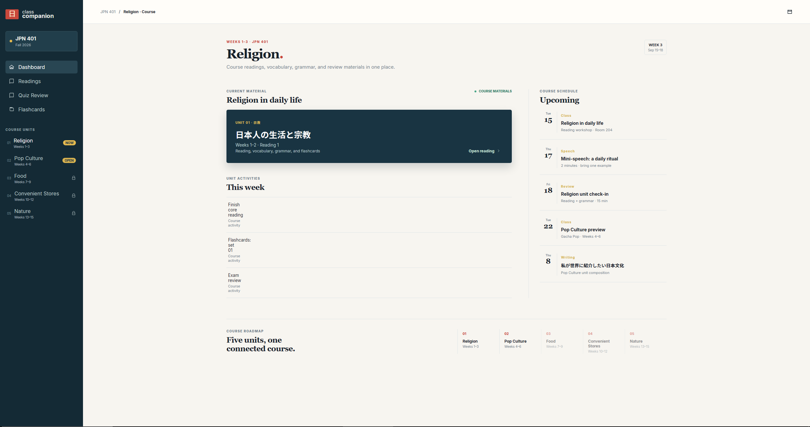

I'm an Information Science student at Michigan State University. I like
learning about web development, AI, and how people actually use technology.
I'm still figuring out what I want to focus on long-term, but I enjoy making
projects that solve small problems or make everyday things easier.
About Me
I'm studying Information Science at Michigan State University. I first got
interested in technology because I thought programming was cool, but I have
also started thinking more about how people use the things that get built.
I also studied abroad in Japan. It gave me a chance to improve my Japanese
and experience a different environment. Learning another language made me
notice how much communication and design can affect the way people understand
information.
Things I'm interested in
Web development
Artificial intelligence
Human-centered technology
Japanese language and culture
Building useful personal projects
Projects
Here are a few projects I have worked on or am still building.
Kanji Practice App / Japanese Companion App

A dashboard concept for organizing Japanese course materials.
I made this because studying Japanese can mean switching between a lot of
different pages and resources. I wanted to make one place for readings,
vocabulary, grammar, kanji practice, and flashcards.
The goal is to make it easier to go through class material without having
to keep jumping between different tabs.
A concept for seeing assignments from multiple classes in one view.
I made this because I wanted one place to see what was due instead of
opening every D2L course page separately.
It is a Chrome extension that collects upcoming D2L due dates and puts
them into one organized dashboard.
I wanted the due dates and assignment details to be easier to scan,
especially during busy weeks.
Task Memory API
Task Memory API is a project I made to keep track of memories, tasks,
events, and reminders through an API.
I used Express, Prisma, and SQLite. It helped me learn more about how an
API can organize data and how to make sure the same reminder does not get
sent twice.